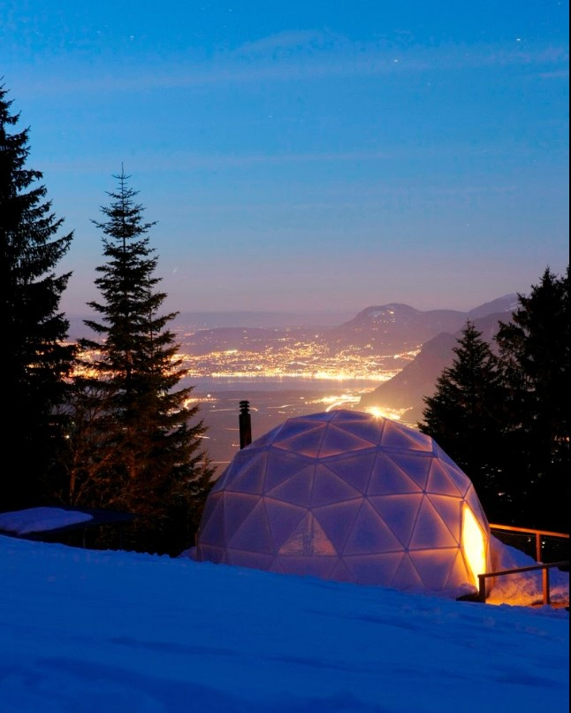
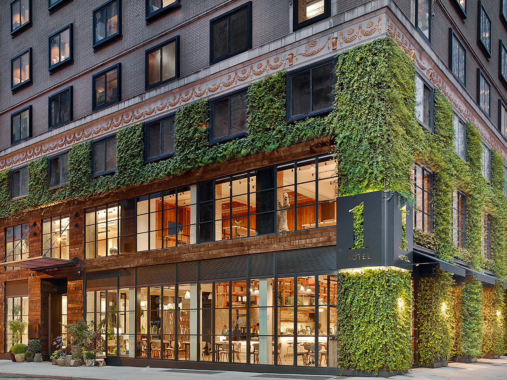

Los 5 hoteles más sustentables del mundo
- Campi Ya Zanki, Kenia
- Whitepod, Suiza
- Jean-Michel Cousteau Resort, Fiji
- Jumeirah Vittaveli, Maldives
- 1 Hotel Central Park, NY y Miami
Campi Ya Zanki, Kenia
Este campamento ecológico en Mtito Andei, Kenia, tienen una larga lista de cuidados que utilizan diariamente para reducir su impacto ambiental. Sus suites y casas de campo fueron construidas por gente local masai a partir de los árboles que se han caído solos, y todo el campamento funciona con energía solar. Un sistema de captación de agua almacena la poca lluvia que recibe el campamento, y el agua usada se filtra y se bombea a los estanques para mantener la vida silvestre local. Para cocinar, utilizan carbón ecológico, y los desechos se reciclan siempre que sea posible. Además, los visitantes del campamento contribuyen con una tarifa de conservación de $ 101 por día, apoyando a una organización que paga a los locales para que no maten a los leones y leopardos que amenazan su ganado.

Whitepod, Suiza
Este hotel de “eco-lujo” en los Alpes suizos ofrece una experiencia alpina única y sostenible. Los huéspedes se quedan en cápsulas espectaculares que tienen un impacto ambiental mínimo y están hechas con una infraestructura independiente para minimizar el uso de materiales de construcción. Cada cápsula se calienta con su propia estufa de leña, que funciona con madera de origen local. La iluminación es LED y las botellas de agua son reemplazadas por agua local de manantial. El hotel también utiliza dispositivos de ahorro de agua en los lavabos y regaderas, y temporizadores en calderas.
Jean-Michel Cousteau Resort, Fiji
El Jean-Michel Cousteau Resort en Vanu Levu, Fiji, tiene muchas credenciales verdes. Su huerto orgánico cosecha fruta como coco, piña, mango y guayaba, todos son sembrados con prácticas agrícolas sostenibles. Además, también cuentan con un programa educativo para enseñar a los huéspedes más jóvenes sobre la naturaleza y su valor, el hotel utiliza focos de bajo consumo de energía y madera de bosques locales certificados. Nunca encontrarás peces de piscifactoría en sus menús.

Jumeirah Vittaveli, Maldives
Recientemente galardonado con la Certificación Green Globe (CGG) después de una auditoría de sostenibilidad, el hotel de lujo Jumeirah Vittaveli en Maldivas ha dado numerosos pasos ecológicos en línea con su programa de Responsabilidad Corporativa. El CGG tiene 349 estándares estrictos que las empresas turísticas deben cumplir. Jumeirah Vittaveli ha implementado una serie de medidas ecológicas, que incluyen cambiar a focos LED e instalar un sistema de recuperación de calor que canaliza la energía de los generadores y la usa para calentar el agua. El complejo también cuenta con el sistema “Eco Pure”, que trata el agua de mar para crear agua potable y embotella su propia agua en botellas de vidrio recicladas, ahorrando alrededor de 50,000 botellas de plástico al año.

1 Hotel Central Park, NY y Miami
Los 1 Hotel son elegantes y están muy bien posicionados, cuentan con hoteles en Nueva York, Miami Beach y Hollywood, están construidos y operan diariamente con lineamientos importantes de sostenibilidad. Desde reducir el plástico y minimizar las huellas ambientales de los hoteles a través de estrategias de energía y diseño, hasta invitar a los huéspedes a usar coches eléctricos durante sus viajes y usar materiales reciclados en todo el interior. La franquicia está tomando grandes y pequeños (cualquier granito de arena ayuda) pasos para cuidar el planeta.
